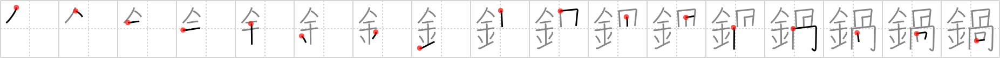

鍋
← →
pot

Reading:
On-Yomi: カ — Kun-Yomi: なべ
Heisig story:
Metal . . . jawbone.
Koohii stories:
1) [Peppi] 24-6-2009(74): A metall pot with non-thermoconductive jawbones as handholds.
2) [synewave] 28-5-2007(31): A gruesome kind of cauldron that Snape might have used is a metal pot in the shape of a skull.
3) [mantixen] 16-2-2007(20): A jawbone is thrown in a metal pot to make bone soup.
4) [Megaqwerty] 16-7-2007(8): Back before metal, people used other people's jawbones for pots.
5) [einahpets] 27-2-2012(7): A metal なべ full of jawbones for dinner? No thanks…